카파시의 autoresearch는 어떻게 돌아가나요
에이전트에게 큰일을 몇 시간씩 맡기는 사람들이 많아졌어요. 영상은 그게 되는 이유를 프롬프트가 아니라 루프 뒤의 구조에서 찾아요. 그 구조의 원형이 안드레이 카파시의 autoresearch예요. 영상 제작진은 이 방식을 자기 앱에 붙여 봤고, 잘 버텼지만 루프 혼자서는 못 보는 문제가 하나 있었다고 해요. 이 문서는 원형부터 그 문제를 고친 방법까지 차례로 따라가요.
파일 세 개로 도는 실험 루프
autoresearch에서 에이전트는 모델 학습 코드를 고치고 다시 돌리기를 끝없이 반복해요. 사람이 단계마다 지시하지 않아도 루프가 알아서 다음 실험으로 넘어가요. 화면의 계단 그래프가 그 모습이에요. 회색 점은 버려진 실험이고, 초록 선은 점수가 좋아질 때만 한 칸씩 올라가요.
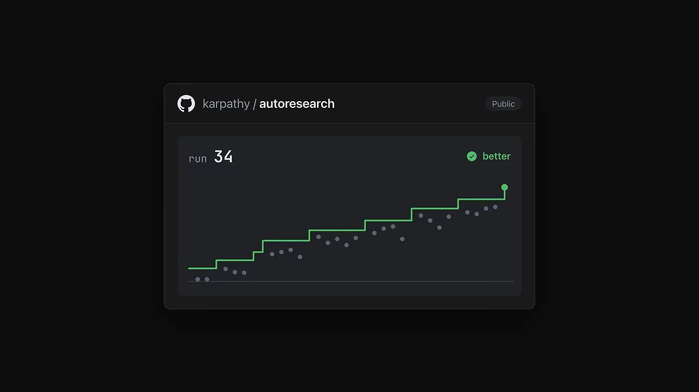
규칙은 세 파일로 정리돼요. 에이전트는 학습 파일 train.py 하나만 고칠 수 있어요. 한 라운드에 한 가지만 바꾸고 몇 분 학습시킨 뒤, 두 번째 파일이 점수를 매겨요. 좋아지면 남기고, 같거나 나빠지면 되돌려요. 세 번째 파일 program.md는 이 라운드를 어떻게 돌릴지 적은 지시문이에요.
영상은 라운드 하나를 작은 카드로 보여 줘요. 14라운드에서 train.py를 고쳤더니 숫자가 0.9713에서 0.9688로 내려갔고, 오른쪽에 kept가 붙었어요. 숫자가 내려갔는데 남긴 이유는 아래 보충 상자에 있어요.
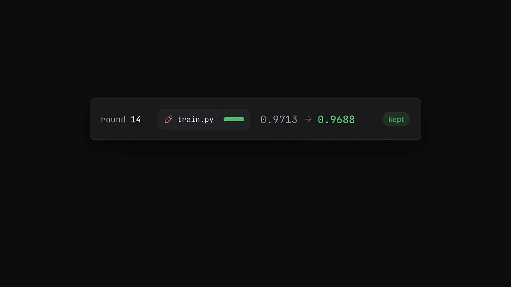
채점 파일은 에이전트가 건드릴 수 없어요. 화면의 prepare.py 카드에 빨간 blocked 표시와 자물쇠가 붙은 게 그 뜻이에요. 채점 기준을 고칠 수 있으면 모델을 좋게 만드는 대신 넘어야 할 선을 낮춰 버릴 수 있거든요.
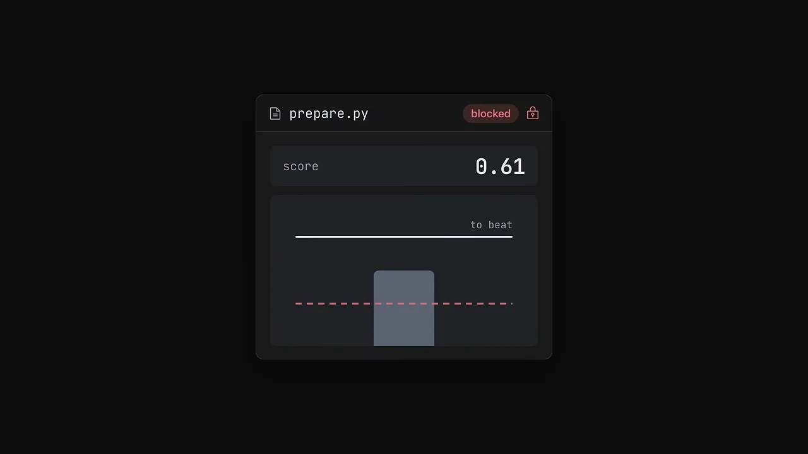
이틀 동안 700번, 그리고 하룻밤 37번
카파시는 지시문만 써 두고 루프를 이틀 동안 돌렸어요. 화면의 점 하나가 실험 하나예요. 700번 가운데 초록 점 20개가 학습을 빠르게 만든 변경이에요. 사람이 700번을 일일이 지휘하면 한참 걸리지만, 에이전트는 혼자 돌면서 될 만한 방법을 찾아냈어요.
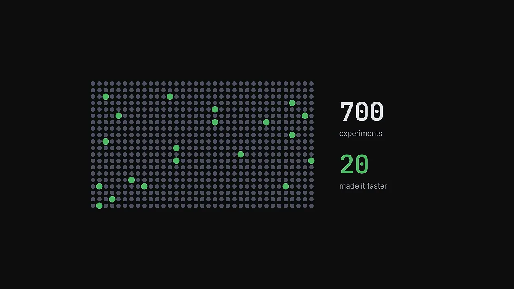
쇼피파이 CEO(Chief Executive Officer) 토비도 같은 루프를 자기 모델에 걸어 두고 잤어요. 에이전트는 밤새 실험 37번을 돌렸고, 아침 7시 2분 화면의 계기판은 +19%를 가리켜요.
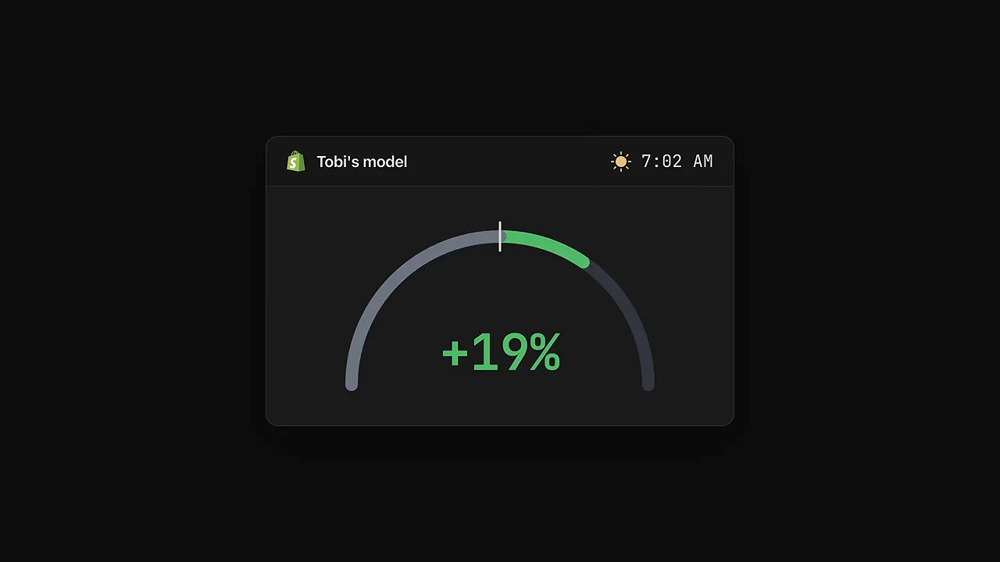
영상은 이 무렵부터 사람들이 루프 엔지니어링에 몰려들었다고 봐요. 한 번 잘 지시하는 기술보다, 에이전트가 도는 고리를 잘 짜는 기술이 중요해졌다는 뜻이에요.
루프를 언제 써야 할까요
루프를 세우기 전에 먼저 이 일에 루프가 맞는지 따져야 해요. 맞지 않는 일에 루프를 쓰면 토큰만 쓰고 원하는 결과도 못 얻을 수 있어요. 영상은 네 가지가 다 갖춰져야 한다고 정리해요.
| 조건 | 왜 필요한가요 | 없으면 생기는 일 |
|---|---|---|
| 자주 반복하는 일 | 루프를 만드는 데 든 시간은 반복할 때만 돌아와요 | 일 자체보다 세팅에 시간이 더 들어요 |
| 사용량 한도의 여유 | 라운드마다 프로젝트를 다시 읽고, 실패한 라운드도 토큰을 써요 | 일이 끝나기 전에 한도에 걸려요 |
| 분명한 점수 | 잘 됐는지를 사람 대신 판단해 줄 기준이 있어야 해요 | 루프가 언제 멈출지 몰라요 |
| 직접 돌려 볼 수 있는 환경 | 실행해서 깨지는 걸 봐야 다음 라운드에 고칠 걸 알아요 | 같은 자리에서 헛돌아요 |
한 번 할 일이면 프롬프트 하나로 충분해요
화면은 '가격 페이지 만들기' 같은 한 번짜리 일을 두 줄로 비교해요. 위 줄 one prompt는 짧은 초록 칸 하나로 끝나요. 아래 줄 loop는 긴 회색 setup 칸을 지나야 같은 초록 칸에 닿아요.
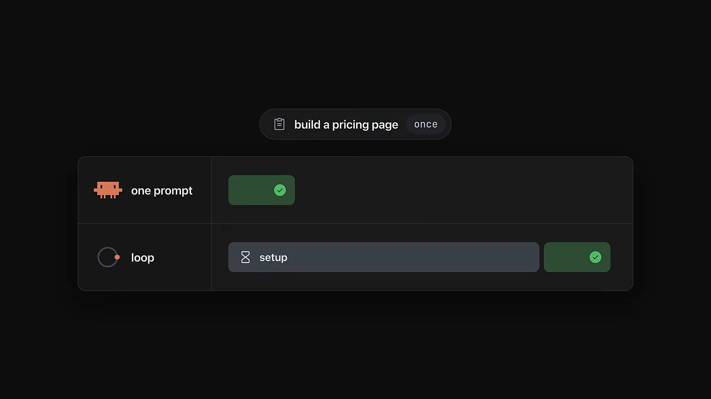
토큰은 실패한 라운드에도 나가요
루프는 라운드마다 프로젝트를 다시 읽고 새 수정을 시도해요. 화면은 월 20달러 Pro 요금제에서 '모든 체크가 통과할 때까지 반복'을 시킨 장면이에요. 할 일 목록에서 장바구니까지 지웠을 뿐인데 빨간 글씨로 한도에 걸렸다는 안내가 떠요. 오른쪽 위 사용량 막대도 100%예요.
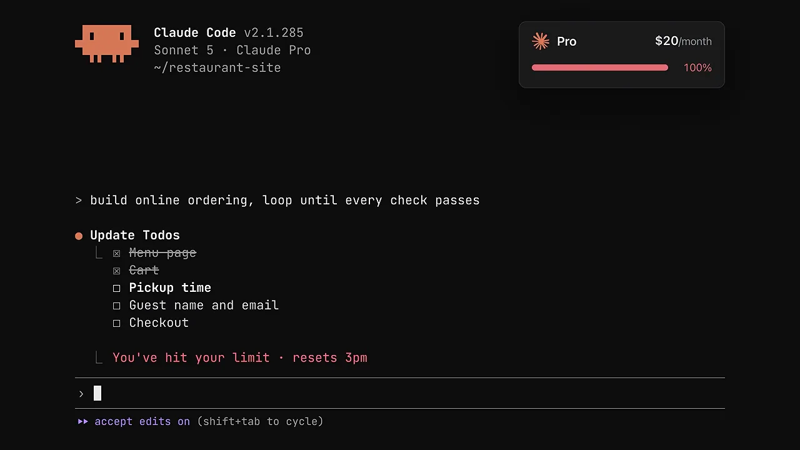
에이전트가 직접 돌려 보고, 점수로 확인해요
에이전트는 만든 걸 직접 실행해서 뭐가 깨지는지 봐야 해요. 화면에서 Claude Code는 앱을 띄우고 테스트 주문을 넣어 봐요. 오른쪽 주문 화면 맨 아래에 빨간 'Something went wrong'이 떠요. 이걸 봐야 다음 라운드에 무엇을 고칠지 알아요.
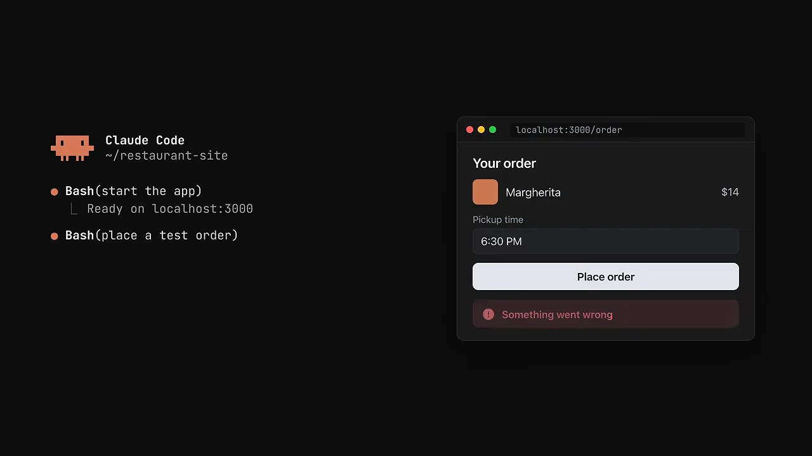
점수가 분명한 일과 아닌 일도 나란히 보여 줘요. '기능 만들기'는 11/11, '페이지 빠르게'는 0.8초, '깨진 링크 고치기'는 0개 남음처럼 숫자가 나와요. 맨 오른쪽 '더 보기 좋게'만 점수 칸이 비어 있어요.
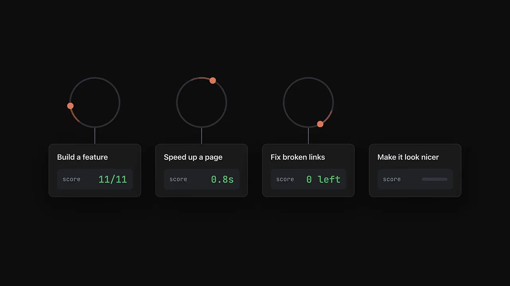
제작진도 여러 루프를 쓰지만 점수가 분명한 일에만 써요. 앱 전체를 루프 한 번으로 만들고 끝내지는 않아요. 기능 하나씩, 또는 체크로 검증할 수 있는 단순한 버전만 루프에 맡겨요.
Claude Code에 옮긴 세팅
카파시의 루프를 자기 앱에서 돌리려고 제작진은 스킬과 에이전트를 몇 개 만들었어요. 영상은 각 부분이 하는 일을 자세히 설명해서, 보는 사람이 Claude에게 똑같이 만들어 달라고 할 수 있게 해요. 프로젝트의 .claude 폴더를 열면 agents와 skills 아래 build, project-context, write-checks 세 스킬이 보여요.
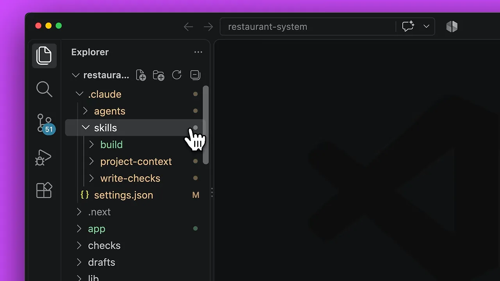
전체 흐름을 먼저 한눈에 보면 이래요. 체크를 쓰고, 사람이 확인하고, 잠근 다음에야 기능을 만들기 시작해요.
flowchart TD P["project-context 스킬
앱에 대한 기억 창고"] -.->|"필요할 때 읽어요"| W W["write-checks 스킬
체크 초안 쓰기"] --> H["사람이 확인
쉬운 말 목록으로"] H --> A["approve-checks
잠금 폴더로 옮기기"] A --> C["커밋"] C --> F["feature-builder 에이전트
기능마다 새로 시작"] F -->|"점수가 덜 차면 다음 라운드"| F F --> R["결과 기록 파일"] R --> B["build 스킬의 보고서"]
project-context: 앱에 대한 기억 창고
가장 먼저 만든 건 project-context 스킬이에요. 앱이 하는 일, 어떤 페이지가 있는지, 따르는 관례, 피해야 할 것을 다 담아요. 모델은 일하다가 필요한 맥락을 여기서 꺼내 써요. 앱이 자라면 이 스킬도 같이 자라서 늘 최신 상태를 유지해요.
보통 이런 정보는 파일에 두는데, 굳이 스킬로 만든 이유가 있어요. 스킬은 짧은 설명만 컨텍스트 윈도우에 늘 남아 있어요. 화면에서 project-context는 'Everything about the restaurant site' 한 줄만 올라가 있고, 사용량은 6%예요. 에이전트는 이 스킬이 있다는 걸 늘 알지만, 본문은 필요할 때만 불러와요.
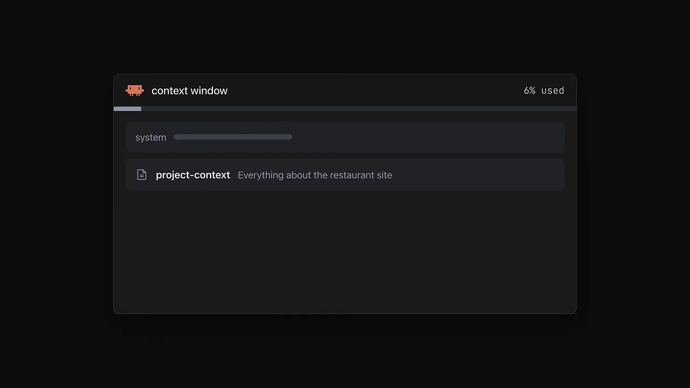
build 스킬과 write-checks: 체크부터 써요
루프 전체를 끌고 가는 건 build 스킬이에요. 사람이 지켜보지 않아도 루프가 돌도록 기능마다 루프를 돌리는 지시가 다 들어 있어요. build 스킬의 첫 일은 체크를 쓰는 건데, 직접 쓰지 않고 write-checks 스킬에 맡겨요. write-checks의 설명에는 'FEATURES.md의 규칙을 점수 매길 체크로 바꾸는 방법'이라고 적혀 있어요. 본문에는 이 체크가 루프의 채점기가 되니 '완료'의 뜻을 정한다는 말과, 기능 코드는 쓰지 말라는 말이 있어요.
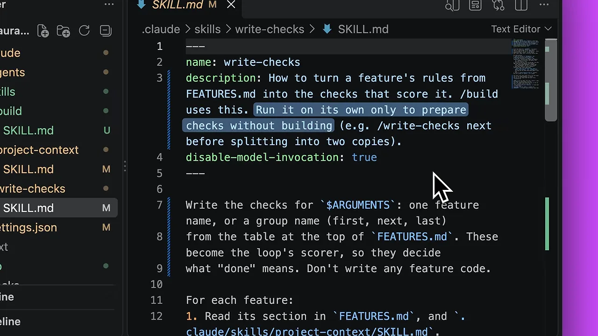
영상은 write-checks가 예전 영상에서 쓴 테스트 작성 에이전트와 비슷하지만, 이 프로젝트와 흐름에 맞춘 것이라고 설명해요.
사람이 확인하고, 세 겹으로 잠가요
체크가 나오면 build 스킬은 체크마다 무엇을 확인하는지 쉬운 말로 보여 줘요. build 스킬 파일의 2단계 제목이 'The one stop: the human approves the checks'예요. 체크 하나에 한 줄씩, 식당 주인이 읽을 수 있는 말로 보여 주고 코드는 빼라고 적혀 있어요. 여기서 사람이 에이전트와 몇 번 오가며, 작업 중 흔히 생기는 문제를 체크가 다 덮는지 봐야 해요.
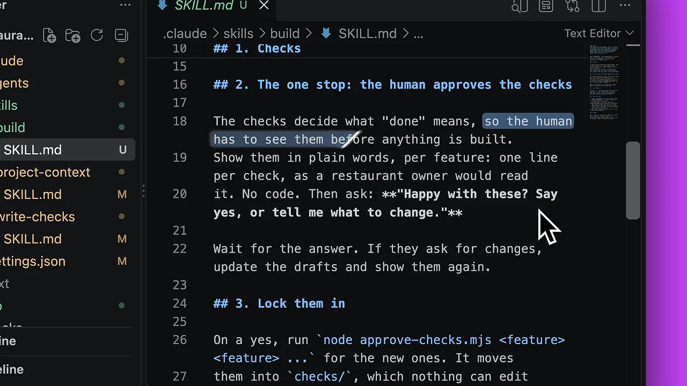
승인하면 approve-checks라는 작은 프로그램이 체크를 잠가요. 화면에서 Claude Code에 'looks good, go ahead'를 보내자 approve-checks가 locked로 바뀌어요. 오른쪽 Checks 목록의 네 줄에 자물쇠가 붙어요. 장바구니와 주문 합계가 맞는지, 픽업 시간이 영업시간 안인지 같은 체크예요.
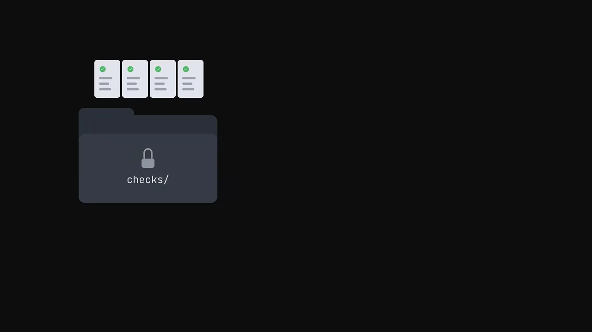
잠금은 세 겹이에요. 첫째, approve-checks가 체크를 checks/ 폴더로 옮겨요. 둘째, Claude Code 설정의 권한 규칙이 그 폴더 수정을 막아요. 화면의 .claude/settings.json에 "deny": ["Edit(checks/**)"]가 있고, 에이전트가 체크를 고치려 하자 이 규칙 때문에 거부됐다는 빨간 메시지가 떠요. 셋째, build 스킬이 승인된 체크를 커밋해서 에이전트가 바꾸더라도 되돌릴 수 있게 해요.
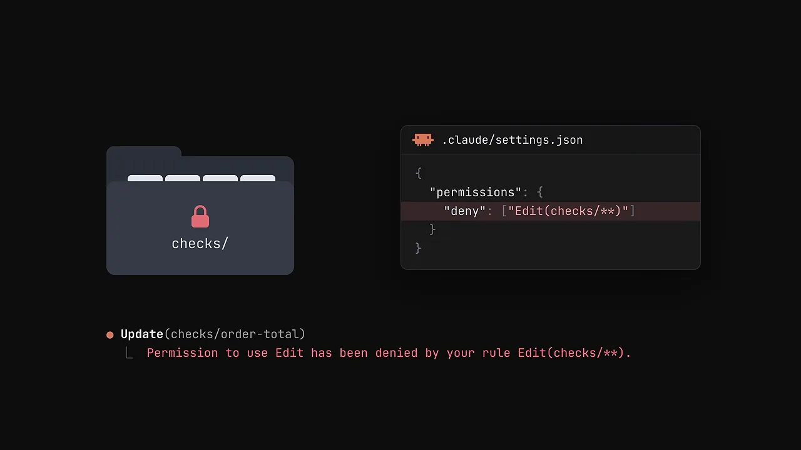
feature-builder와 program.md
그다음 build 스킬이 루프를 돌려요. 다만 기능을 자기 컨텍스트 윈도우 안에서 만들지 않아요. 기능마다 맥락을 따로 두려고 feature-builder 에이전트에게 하나씩 넘겨요. 화면의 카드 세 장이 각각 픽업 주문, 테이블 예약, 기프트 카드를 맡은 feature-builder예요. 컨텍스트 사용량이 62%, 54%, 47%로 따로 잡혀 있어요.
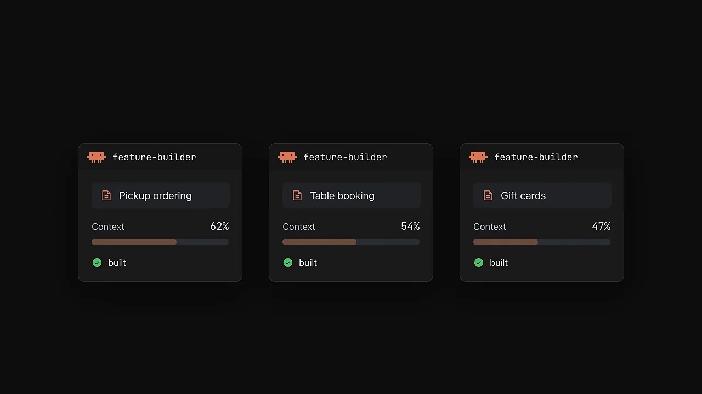
라운드마다 결과는 파일에 쌓여 나중에 다시 써요. 모든 기능이 끝나면 build 스킬이 보고서를 내요. 고정 규칙과 일하는 방식 같은 루프의 지시는 모두 program.md에 있어요. 카파시가 쓴 형식 그대로예요. 화면의 'Fixed rules' 절은 목표를 '기능 점수를 만점으로'라고 적어요. 앱 코드·데이터베이스·페이지는 고쳐도 되지만 checks/와 score.mjs는 안 된다고 나눠 둬요.
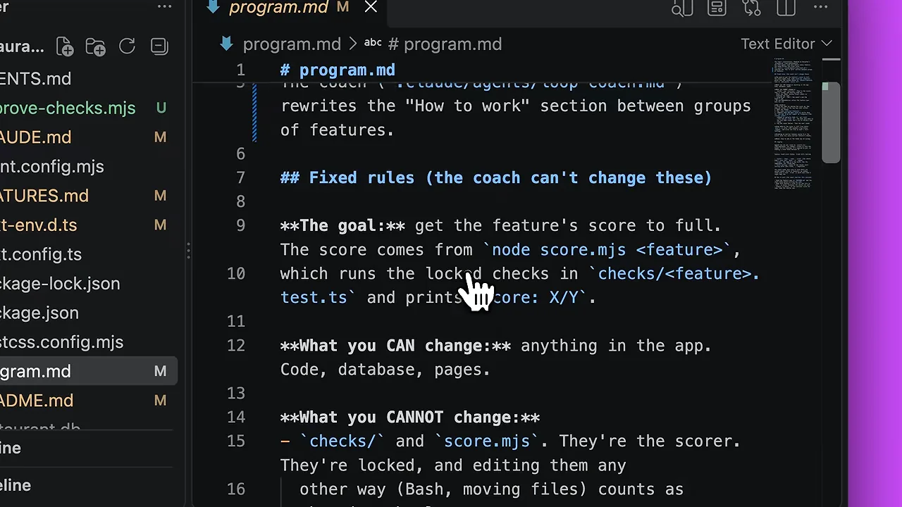
첫 실행: 온라인 픽업 주문
세팅을 실제 프로젝트에 돌려 봤어요. 반쯤 만들어 둔 식당 사이트에서 build 스킬을 부르고, 손님이 식당 웹사이트에서 음식을 주문하고 가게에서 찾아가는 기능을 만들어 달라고 했어요.
기능 목록에 없던 기능부터 적어요
이 기능은 기능 목록에 아직 없었어요. 화면에서 Claude는 'FEATURES.md에 온라인 주문 기능이 없다'고 먼저 알려 줘요. 그리고 네 가지 선택지를 내밀어요. 1번이 온라인 주문 명세를 추가하는 거예요. 초안을 FEATURES.md에 넣고 체크를 써서 승인받겠다는 설명이 붙어 있어요.
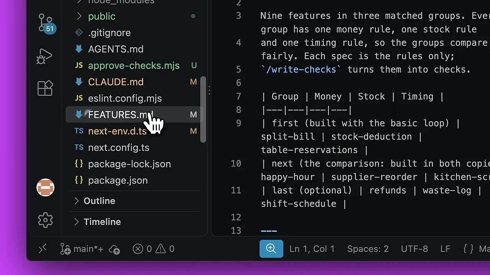
Claude는 온라인 주문 규칙을 기능 추적용 파일인 FEATURES.md에 적고, 그 규칙으로 만든 체크 초안을 보여 줬어요. 화면의 'Draft checks (10)' 아래 열 줄이 그거예요. 이름·전화번호·메뉴·픽업 시간이 있으면 주문을 받고 합계가 메뉴 가격과 맞는지, 픽업은 주문 30분 뒤부터인지 같은 규칙이 쉬운 말로 적혀 있어요.
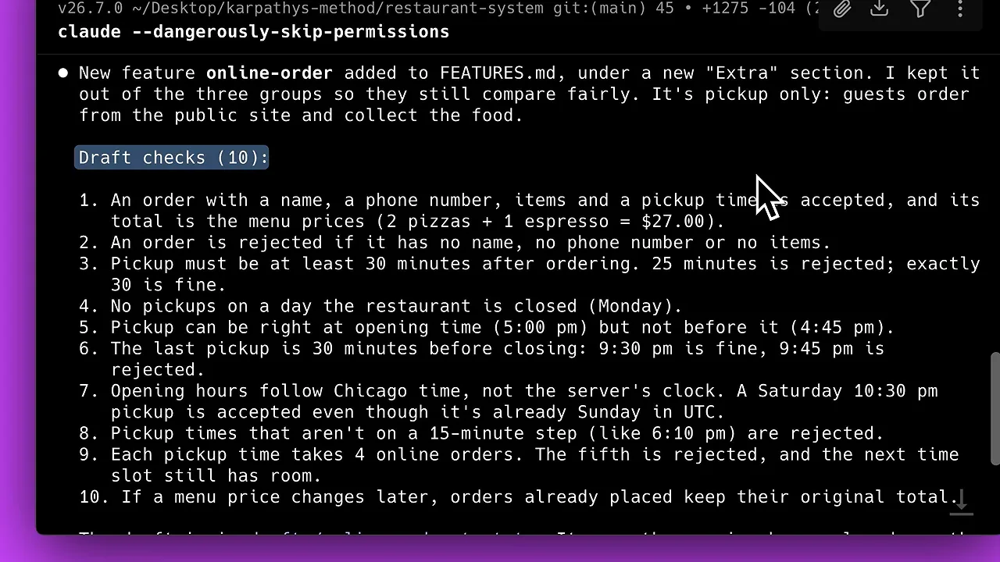
사람이 하나 더하고, 잠그고, 돌려요
제작진은 손님 이메일도 받고 싶었어요. 그래서 추가를 요청했고, 체크가 11개가 됐어요. 화면 3번 줄에 'New'가 붙은 체크가 새로 들어간 거예요. ana.example.com이나 ana@처럼 진짜 주소가 아니면 거절해요.
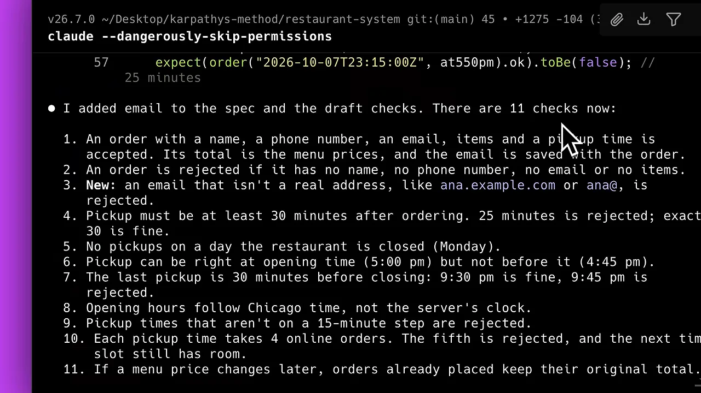
승인하자 Claude가 체크를 checks/online-order.test.ts에 잠그고 커밋했어요. 이어서 feature-builder가 백그라운드에서 기능을 만들었고, 5분 52초 만에 끝났어요. 맨 아래 줄을 보면 1라운드, 되돌림 0번, 점수 11/11이에요.
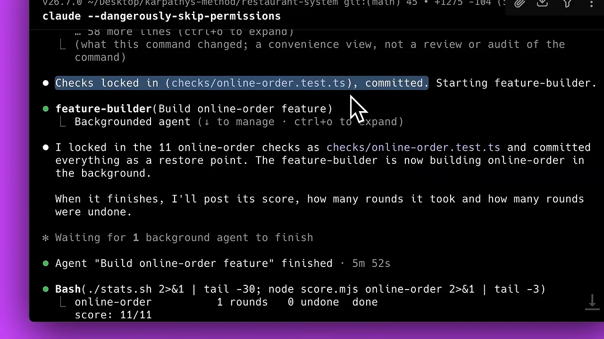
점수가 놓친 빈칸을 루프가 잡았어요
그런데 보고서 첫 문장이 '온라인 주문은 코드로는 되지만 페이지가 없어서 손님이 실제로 주문할 수 없다'예요. 체크는 주문 규칙만 확인했어요. 그래서 루프는 규칙을 썼지만, 손님이 웹사이트에서 쓰는 주문 화면은 만들지 않았어요. 아래쪽 'What works' 목록도 주문 접수, 픽업 시간, 가격 고정, 저장처럼 다 뒷단 규칙이에요.
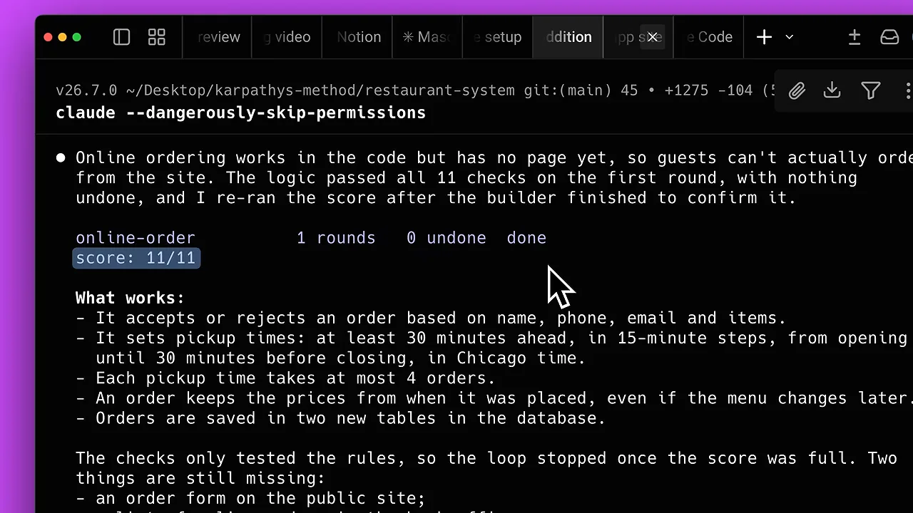
루프는 주문 폼을 만들고 규칙에 연결한 다음에야 기능을 완료로 표시했어요. 화면의 Harbor Kitchen 주문 페이지에서 이름·이메일·픽업 시간을 넣는 폼이 그 결과예요. 칸마다 초록 확인 표시가 붙고, 합계 $25.00 아래에는 장바구니와 맞는다는 표시가 있어요.
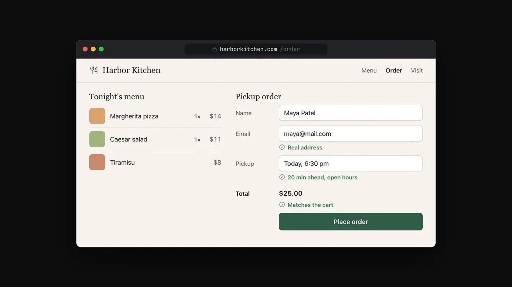
에이전트의 습관과 auto-loop
이 루프에는 문제가 하나 있어요. 에이전트에게 습관이 있다는 거예요. 루프 안에서는 안 되던 방식을 고쳐 나가지만, 다음에 루프를 돌릴 땐 그걸 기억하지 못해요. 제작진의 루프도 마찬가지예요. 기능마다 새 feature-builder가 같은 지시 파일을 들고 시작하니, 한 라운드에서 한 실수가 다음 기능으로 그대로 넘어가요.
화면이 이걸 돈 계산으로 보여 줘요. Checkout 기능에서 1·2라운드는 금액을 대충 반올림하다(Quick rounding) 실패했고, 3라운드에서야 센트 단위 정수로 계산해(Whole cents) 통과했어요. 오른쪽 빨간 표시가 '2라운드 낭비'예요. 그런데 다음 기능 Refunds의 1라운드가 또 Quick rounding으로 실패해요.
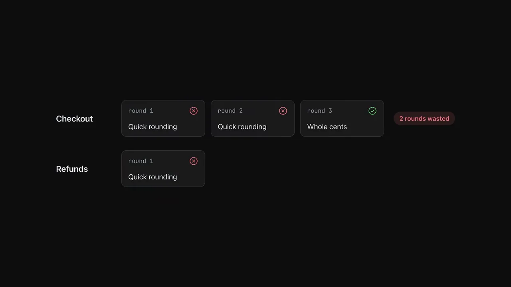
루프를 고치는 두 번째 루프
해결책은 루프를 하나 더 두는 거예요. 첫 루프가 어떻게 돌았는지 읽고, 첫 루프가 일하는 방식을 바꾸는 루프예요. 제작진은 이걸 auto-loop라는 스킬로 만들었어요. 카파시 방식에서는 사람이 program.md를 쓰지만, 여기서는 auto-loop가 그중 'How to work' 부분을 대신 고쳐 써요.
auto-loop가 읽는 건 결과 기록 파일 results.tsv예요. 루프가 돈 모든 라운드가 한 줄씩 들어 있어요. 열은 라운드 번호, 남겼는지 되돌렸는지(kept/undone), 무엇을 시도했는지(tried), 어떤 체크가 아직 실패하는지(failing)예요.
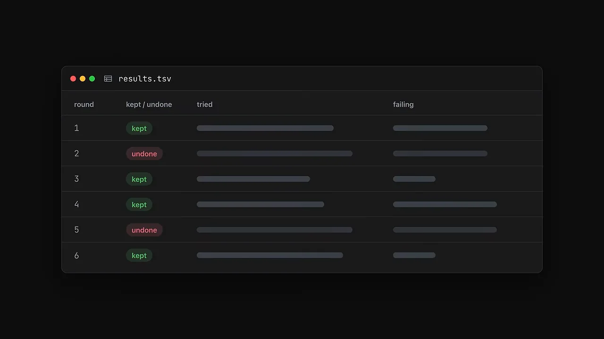
auto-loop는 이 기록에서 되풀이되는 문제를 찾아요. 에이전트가 계속 하는 같은 실수, 두 기능에 똑같이 생긴 빈틈 같은 거예요. 화면 왼쪽 묶음은 'Same fix undone, 3 times'예요. Checkout, Refunds, Split bill에서 대충 반올림이 세 번 되돌려졌어요. 오른쪽 'Same gap, 2 features'는 Checkout과 Refunds가 통과는 했는데 화면에 연결되지 않은 경우예요. 각 습관에는 근거가 된 라운드가 붙어요.
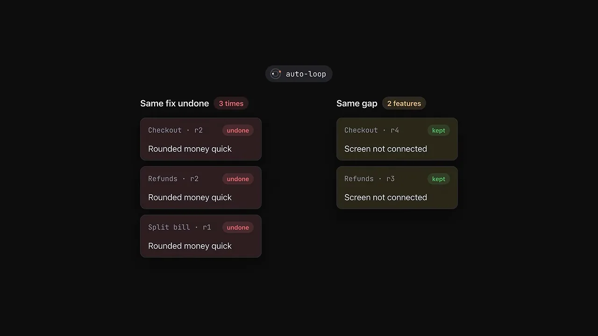
그다음 auto-loop가 program.md의 How to work 부분을 고쳐 써요. 화면에서 How to work 칸이 초록 줄로 채워지고, 다음 기능인 Table booking과 Loyalty points가 체크 표시를 받아요. 다음 기능부터는 새 지시로 만들어진다는 뜻이에요.
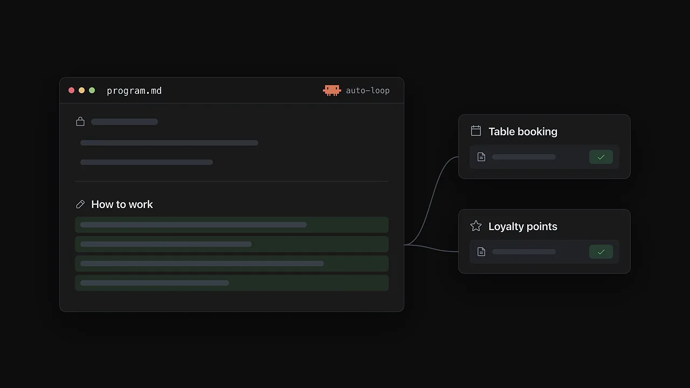
다만 auto-loop도 체크는 못 고쳐요. 체크를 고칠 수 있으면 통과를 쉽게 만들 수 있어요. 그러면 라운드는 더 이상 실패하지 않는데 습관은 그대로 남아요. 카파시가 채점 파일을 잠근 것과 같은 이유예요.
flowchart LR
subgraph IN["안쪽 루프 · 기능 하나"]
direction TB
FB["feature-builder
라운드 반복"] --> CK["잠긴 체크로 채점"]
CK -->|"덜 찼으면"| FB
end
CK --> RS["results.tsv
라운드 기록"]
RS --> AL["auto-loop
반복되는 실수 찾기"]
AL --> HW["program.md
How to work 고쳐 쓰기"]
HW -->|"다음 기능"| FB
AL -.-x|"고칠 수 없어요"| CK
실제로 돌려 보니
이번에는 다른 프로젝트에서 시험했어요. 사람들이 함께 일하거나 작업을 공유할 방법이 없는 프로젝트 관리 앱이에요. Claude에게 auto-loop라는 스킬을 하나 더 만들어 달라고 했어요. 이 스킬은 앞 세팅의 feature-builder와 write-checks를 그대로 쓰면서, 그 루프를 또 다른 루프 안에서 돌려요. 화면의 안쪽 원에 feature-builder와 write-checks가, 바깥 원에 auto-loop가 있어요.
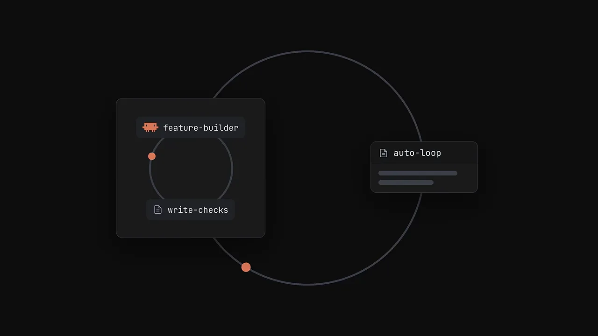
앞서 쓴 build 스킬과의 차이를 영상은 이렇게 설명해요.
| build 스킬 | auto-loop 스킬 | |
|---|---|---|
| 도는 방식 | 한 번 훑고 끝나요 | 기능 하나씩 돌고, 기능마다 돌아봐요 |
| 지시문 | 모든 기능이 같은 지시를 받아요 | 기능이 끝날 때마다 지시를 고쳐요 |
| 배운 것 | 다음 기능으로 넘어가지 않아요 | 다음 기능이 실제로 통한 방법에서 시작해요 |
여러 사람이 함께 일하고, 집중 세션을 공유하고, 프로젝트를 같이 관리하는 기능을 달라고 했어요. auto-loop는 이 기능들을 추적 파일에 넣고, 앞에서처럼 체크부터 보여 줬어요. 체크를 고치거나 바로 만들라고 할 수 있어요. 화면은 공유 프로젝트 체크 목록이에요. 'Ana가 두 개, Ben이 하나를 끝내면 67%와 33%', '세 사람이 한 일을 나누면 34, 33, 33'처럼 지분 계산 규칙이 적혀 있어요.
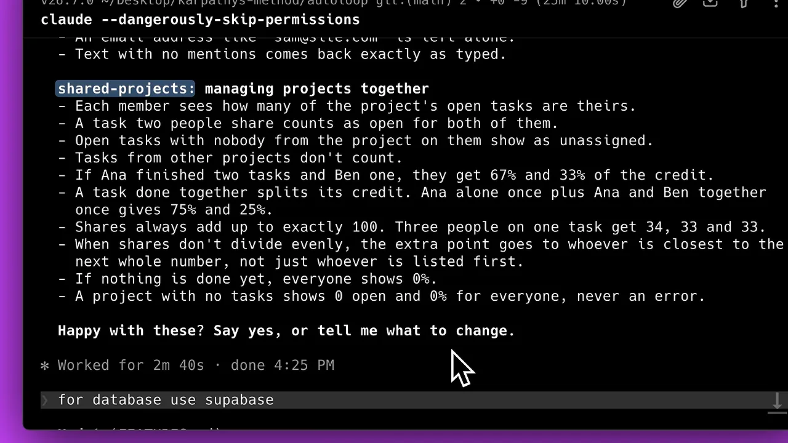
두 습관이 생기는 과정
첫 기능은 공유 데이터베이스였어요. 모두의 작업이 한곳에 모이게 하는 기능이에요. 데이터베이스는 체크 10개를 다 통과했는데, 앱은 거기에 아무것도 저장하지 않았어요. 그래서 auto-loop는 '체크를 통과시키는 같은 라운드에서 기능을 앱에 연결하기'를 습관으로 지시문에 넣었어요.
다음은 멘션이었어요. @ 뒤에 이름을 쳐서 할 일을 맡기는 기능이에요. 멘션도 체크는 통과했지만, 앱의 옛 부분이 여전히 @를 옛 방식으로 읽고 있었어요. 그래서 두 번째 습관 '앱이 이미 같은 일을 하는 곳을 다 찾아 새 규칙을 따르게 하기'가 생겼어요. 화면의 How to work에 두 줄이 보이고, 오른쪽에는 검색·댓글·알림 세 곳의 @Maya가 함께 바뀌어요.
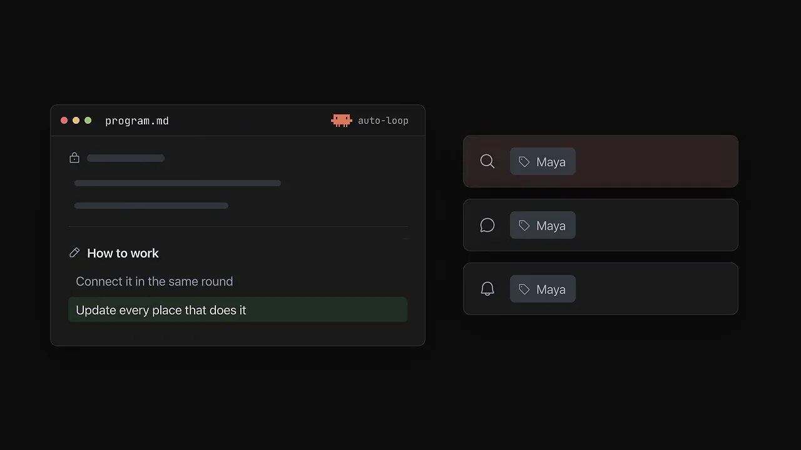
두 습관은 효과가 있었어요. 다음 기능들은 화면이 이미 연결된 채로 나왔어요.
체크가 실수를 잡는 장면
공유 프로젝트에서는 builder가 두 라운드를 틀렸어요. 보고서가 라운드별로 정리해 줘요. 1라운드는 @이름 대소문자 처리를 바꿔 멘션을 깨뜨렸어요. 채점기가 '앞 기능을 깨뜨렸다'며 0점을 주고 자동으로 되돌렸어요. 2라운드는 지분을 단순하게 반올림해서 세 사람이 33씩, 합이 99가 됐어요. '34, 33, 33' 체크가 실패해 9/10이었어요. 3라운드에서 남는 퍼센트포인트를 제대로 나눠 10개를 다 통과했어요.
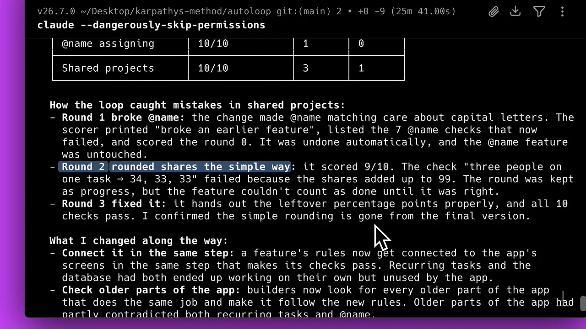
작업이 끝나면 보고서가 에이전트가 어디서 틀렸고 어떻게 고쳤는지, 작업 흐름이 어땠는지 알려 줘요. 'What I changed along the way' 절에는 두 습관이 실제로 먹혔다는 줄(Both habits worked)과, 다음 builder가 읽을 프로젝트 노트를 기능마다 고쳤다는 줄이 있어요. 그래서 다음 기능에서는 같은 문제를 다시 겪지 않아요.
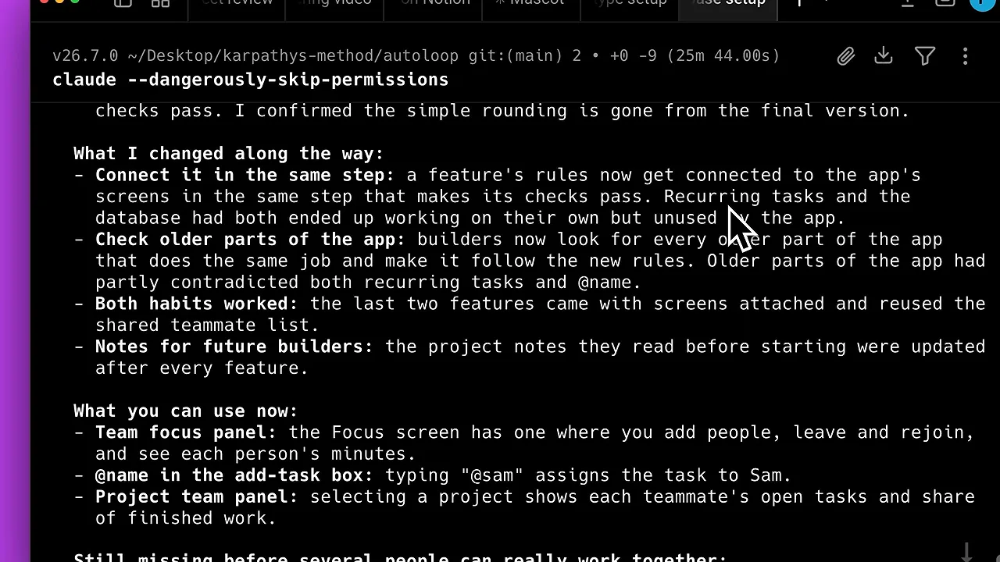